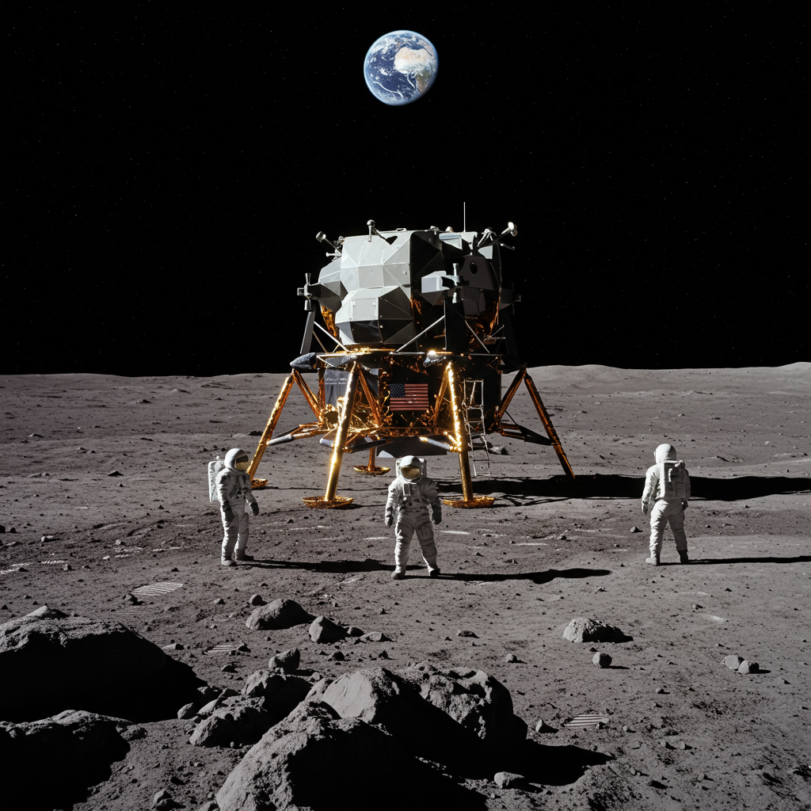

Apolo 17 – SIGMA ULTRA
Agencia: NASA
Lanzamiento: 7 de diciembre de 1972 – 23:33 UTC
Duración total: 12 días, 13 horas, 52 minutos
Tipo de misión: Misión tripulada lunar (última del programa Apolo)
Objetivo: Explorar el valle Taurus–Littrow, realizar estudios geológicos y desplegar experimentos científicos
Vehículo lanzador: Saturno V
Módulo lunar: Challenger
Tripulación: Eugene Cernan (comandante), Harrison Schmitt (piloto LEM, geólogo), Ronald Evans (piloto Módulo de Comando)
Actividades en la superficie lunar
Duración en la Luna: 3 días, 2 horas
Número de paseos lunares (EVA): 3
Tiempo total de EVA: 22 horas, 4 minutos
Distancia recorrida con vehículo lunar (LRV): 35.9 km
Muestras recolectadas: 110.4 kg
Carga científica y experimentos
- Estación ALSEP: experimentos sismográficos, magnetómetro, medidor de calor lunar
- Experimentos de perfil sísmico (LSPE)
- Mediciones gravitatorias
- Experimentos geofísicos con geófonos
Legado histórico
Última misión tripulada lunar del programa Apolo y hasta ahora la última visita humana a la Luna.
Harrison Schmitt fue el primer y único geólogo profesional en pisar la Luna.
Eugene Cernan pronunció la frase histórica: "We leave as we came, and, God willing, as we shall return."
Traducción al español:
"Nos vamos tal como llegamos y, si Dios quiere, como regresaremos."